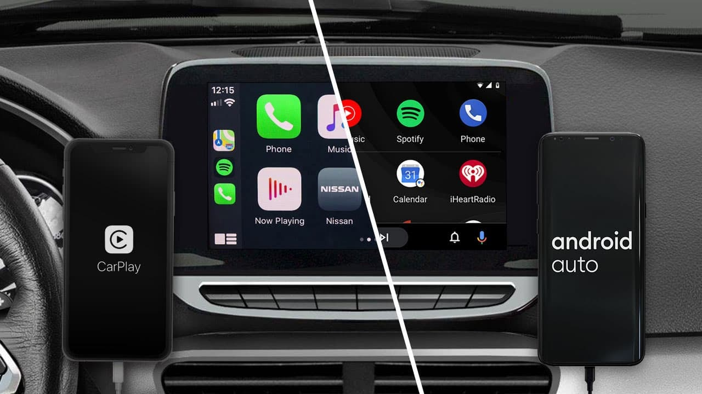

Da simplicidade analógica à complexidade digital, as interfaces de multimídia de carros percorreram um longo caminho. O que começou como um simples rádio para ouvir notícias e músicas se transformou em um centro de comando e entretenimento integrado. Esta linha do tempo explora como a interação entre o motorista e o veículo evoluiu, destacando marcos importantes no hardware e software que moldaram a experiência automotiva moderna.
Tudo começou com a simplicidade. O foco era unicamente no entretenimento básico, com interfaces que consistiam em botões e mostradores físicos.
O primeiro rádio para carro, o Motorola 5T71, foi lançado. A interface era rudimentar, com botões para sintonizar as estações AM e ajustar o volume. O alto preço tornava o item um luxo para poucos.
A Blaupunkt lança o primeiro rádio com FM (Frequência Modulada). A interface se manteve a mesma, mas a qualidade do som melhorou, reduzindo interferências e ruídos. Isso marcou a primeira grande evolução na experiência de áudio.
Com o surgimento das fitas de cartucho e, em seguida, as fitas cassete, os motoristas ganharam a capacidade de escolher e levar suas próprias músicas. A interface ganhou um novo elemento: o slot para inserir a fita, além de botões para avançar, retroceder e ejetar.
A tecnologia digital começa a se infiltrar nos carros. Interfaces híbridas (físicas e digitais) surgem, trazendo mais funcionalidades e um vislumbre do futuro.
Os CD players substituem as fitas, oferecendo melhor qualidade de áudio e a capacidade de pular para faixas específicas. Na mesma época, os primeiros sistemas de navegação GPS embarcados, como o Honda Electro Gyrocator, aparecem em carros de luxo. A interface de navegação era complexa, com telas monocromáticas e comandos por botões, exigindo a inserção manual de mapas em mídias físicas.
Surgem as primeiras centrais de multimídia com telas LCD coloridas. Embora ainda controladas por botões e dial, elas ofereciam uma interface visual mais rica para funções como GPS, rádio e, posteriormente, a exibição da câmera de ré. A usabilidade, no entanto, ainda era limitada e muitas vezes complexa.
A interface do celular migra para o carro, redefinindo completamente a interação. O foco passa a ser na integração, simplicidade e experiência do usuário (UX).
As telas sensíveis ao toque se tornam o padrão. A eliminação de botões físicos em favor de uma interface digital unificada permite um design de painel mais limpo e minimalista. A interação se torna mais direta e intuitiva, similar à de um smartphone, embora os desafios de segurança e usabilidade durante a condução continuem sendo um ponto de atenção.
O surgimento dessas plataformas é um divisor de águas. Elas permitem que o motorista espelhe a interface de seu celular na tela do carro, acessando aplicativos de navegação, música e mensagens de forma segura e familiar. Essa inovação prioriza a proximidade da experiência do usuário, integrando-o ao ecossistema já existente.
A evolução atual foca em interfaces totalmente digitais e conectadas. O painel de instrumentos se torna uma tela, e as telas de multimídia se fundem em um único display gigante, como em carros elétricos. Os sistemas contam com comandos de voz avançados, atualizações over-the-air e integração com a internet (4G/5G). A experiência é cada vez mais personalizada e inteligente, adaptando-se às necessidades do usuário em tempo real.
A jornada da multimídia automotiva, de um simples acessório de rádio a um centro de comando digital, é um reflexo direto do avanço da tecnologia e da mudança nas expectativas dos consumidores. A tendência continua em direção a interfaces cada vez mais fluidas, preditivas e perfeitamente integradas à nossa vida digital.